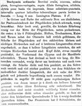

Click on images to enlarge
{kind=link}

Fig. 1. Trachymela ordinaria description
Name
Trachymela ordinaria Weise, 1923
Corresponds to
No known correspondence with any of the species codes.
Type specimen
Not examined.
Original description
Translation of original description (Figure 1) by ChatGPT, 04/2026:
Shortly oval, convex; underside pitchy, variegated with ferruginous; above pale ferruginous, somewhat shining. Elytra behind the base scarcely impressed, densely punctate with weak striation; with four broader intervals and small tubercles slightly darkened. - Length 6 mm. Lamington Plateau. 2 males.
Most similar in size and colour to sublineata Boheman, but the postbasal impression of the elytra is weak and scarcely noticeable. Very broadly oval, convex, the greatest height situated slightly before the middle of the elytra; underside pitch-black, the first 4–6 antennal segments, coxae, trochanters, knees, and tarsi, together with the upper surface, light reddish yellow-brown. The disc of the elytra is somewhat darkened on the numerous small, low tubercles and on four broader longitudinal bands, so that four lighter longitudinal lines are produced, which bear only a few tubercles. Head densely, somewhat rugosely punctulate; the anterior margin of the clypeus and the mandibles blackish. Thorax almost three times as broad as long, posterior angles rounded, widest a little before the base and narrowed anteriorly; the disc densely and finely punctate, at the sides deeply depressed and much more strongly punctate; in front of the scutellum an indistinct dark longitudinal streak, which forks near the middle and curves outward on each side. Elytra punctured in about 20 somewhat irregular rows, of which each set of four is separated by a lighter interval (this pattern very indistinct). The small tubercles are usually rather widely spaced behind one another, but in places closely set side by side, so that behind the transverse impression lacking tubercles they form 3–4 weak transverse rows. The prosternum has two lateral carinae which converge anteriorly.
References
Weise, J. 1923. Chrysomeliden und Coccinelliden aus Queensland. Arkiv för Zoologi 15(12): 1-150 (page 66).
Copyright © 2026. All rights reserved.